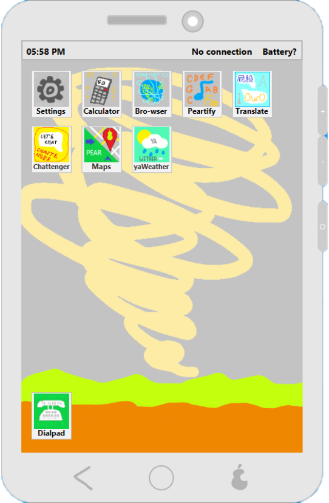
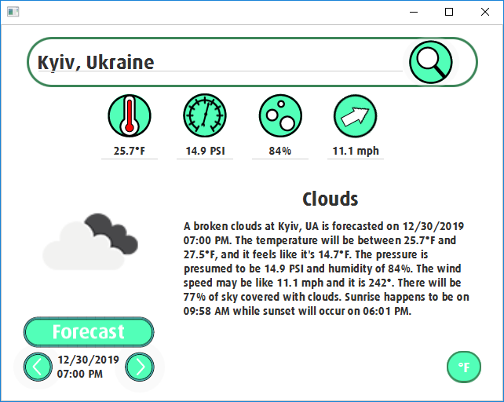
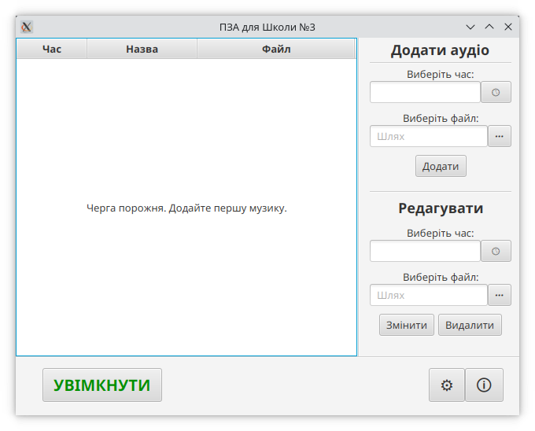
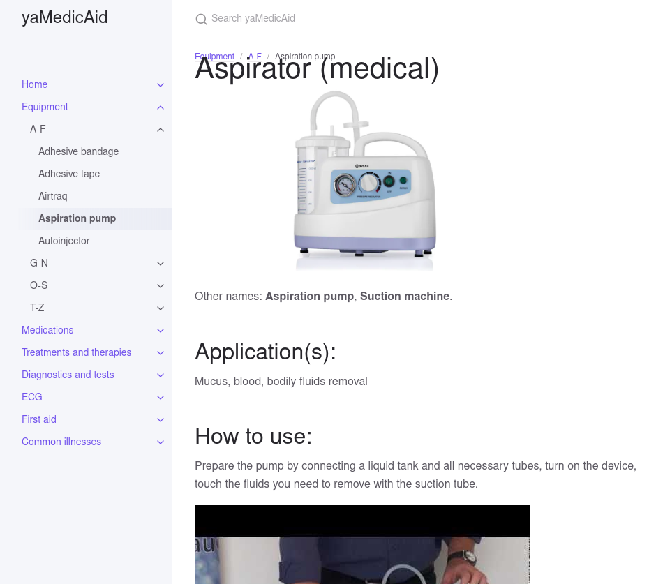
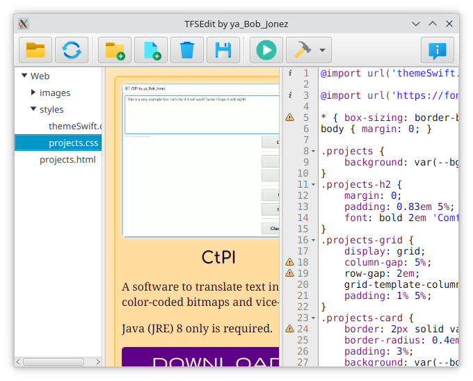

CtPI
A software to translate text into color-coded bitmaps and vice-versa.
Java (JRE) 8 only is required.

iPear XS
A humorous "the worst phone simulator" that has many features and apps, and possibly access to some data.
Java (JRE) 8 only is required.

yaWeather
A simple weather forecast software.
Java (JRE) 8 only is required.

Sch3SAP
A scheduled audio player and my school bell manager software.
Java 11+ is required. Only in Ukrainian.

yaMedicAid
An incomplete Wiki about medical stuff.

TFSEdit
TuFaireSites Editor is a simple website (HTML/CSS/JS) editor with a preview and small helpers.
Java 11+ is required.